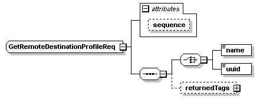
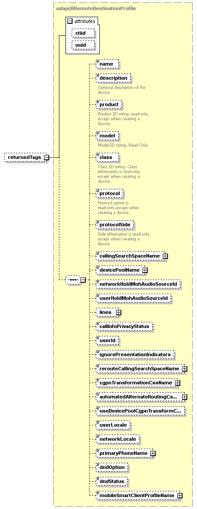

| diagram |  | ||||||||||||
| namespace | http://www.cisco.com/AXL/API/10.5 | ||||||||||||
| children | name uuid returnedTags | ||||||||||||
| used by |
|
||||||||||||
| attributes |
|
||||||||||||
| source | <xsd:complexType name="GetRemoteDestinationProfileReq"> <xsd:sequence> <xsd:choice> <xsd:element name="name" type="axlapi:String100"/> <xsd:element name="uuid" type="axlapi:XUUID"/> </xsd:choice> <xsd:element name="returnedTags" type="axlapi:RRemoteDestinationProfile" minOccurs="0"/> </xsd:sequence> <xsd:attribute name="sequence" type="xsd:unsignedLong" use="optional"/> </xsd:complexType> |
| type | xsd:unsignedLong | ||
| properties |
|
||
| source | <xsd:attribute name="sequence" type="xsd:unsignedLong" use="optional"/> |
| diagram | |||||||
| type | axlapi:String100 | ||||||
| properties |
|
||||||
| facets |
|
||||||
| source | <xsd:element name="name" type="axlapi:String100"/> |
| diagram | |||||||
| type | axlapi:XUUID | ||||||
| properties |
|
||||||
| facets |
|
||||||
| source | <xsd:element name="uuid" type="axlapi:XUUID"/> |
| diagram |  | ||||||||||||||||||
| type | axlapi:RRemoteDestinationProfile | ||||||||||||||||||
| properties |
|
||||||||||||||||||
| children | name description product model class protocol protocolSide callingSearchSpaceName devicePoolName networkHoldMohAudioSourceId userHoldMohAudioSourceId lines callInfoPrivacyStatus userId ignorePresentationIndicators rerouteCallingSearchSpaceName cgpnTransformationCssName automatedAlternateRoutingCssName useDevicePoolCgpnTransformCss userLocale networkLocale primaryPhoneName dndOption dndStatus mobileSmartClientProfileName | ||||||||||||||||||
| attributes |
|
||||||||||||||||||
| source | <xsd:element name="returnedTags" type="axlapi:RRemoteDestinationProfile" minOccurs="0"/> |